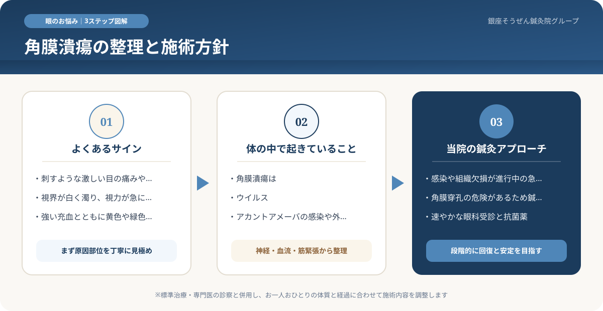

角膜潰瘍の鍼灸
角膜上皮から実質まで欠損する重症の眼疾患です。急性期・感染期は眼科治療が最優先で鍼灸禁忌、治癒後の安定期ケアに限ります。
まず知っておきたい要点と改善の流れ

角膜潰瘍は、細菌・ウイルス・真菌・アカントアメーバの感染や外傷などにより、角膜上皮が欠損し、その奥の角膜実質にまで組織の欠けや濁りが及ぶ非常に重症な疾患です。特にソフトコンタクトレンズやカラーコンタクトレンズの連続装用・消毒不良、ドライアイ、免疫力低下が大きなリスク要因となります。進行して角膜に穴が開く角膜穿孔を起こすと失明に至るため、緊急の眼科治療が不可欠です。
このようなお悩みはありませんか？
- ✓刺すような激しい目の痛みや強い圧迫感がある
- ✓視界が白く濁り、視力が急に落ちてきた
- ✓強い充血とともに黄色や緑色の目やに・まぶたの腫れがある
- ✓強い光を見ると目が痛く、開けていられない
当院の施術アプローチ・改善の流れ
なぜ鍼灸で改善へ向かうのか？（作用機序の図解）
角膜潰瘍に対する鍼灸は、後頸部〜眼周囲の微小循環と毛様体筋・自律神経調整機序を通じて、お体本来の回復力を引き出します。

眼球周囲の危険な深刺しを避け、風池・天柱・合谷・太衝など安全な経穴へ繊細に施術します。
PC・スマホ作業や緊張で固まった首深層筋と眼輪筋周囲の血流を促し、重だるさを軽減します。
交感神経優位による目の乾き・ピント調節疲労を鎮め、涙液分泌とリラックス反応を助けます。
眼科の点眼・定期検査を最優先としつつ、日々の眼精疲労や頭痛・肩こりの連鎖を整えます。
院長YouTube解説・関連動画
公開日：２０２１年 ８月１１日
更新日：２０２３年 ８月 ５日
本日は角膜潰瘍について解説させていただきます。
☆本記事の内容
- •角膜潰瘍とは
- •角膜潰瘍の原因
- •角膜潰瘍の症状
- •角膜潰瘍の改善方法
- •角膜潰瘍のまとめ
- •角膜潰瘍は、角膜の組織が欠けてしまっている状態になること
- •角膜潰瘍には感染性のものと非感染性のものがある
- •角膜潰瘍では目の痛みや充血などが起き、失明に至ることもある
- •角膜潰瘍の改善方法は薬
- •コンタクトレンズは正しくケアをすることが大切
- •角膜潰瘍の改善例
銀座そうぜん鍼灸院の宗前です。
このページを書いている私は、鍼灸師として１３年、担当した利用者様数８０，０００人を誇り、病気の休職者３００人を社会復帰できるまで回復させてきた実績があります。
角膜潰瘍では目の痛みや充血などが起き、失明に至ることもある
角膜潰瘍の主な症状は、目の痛みや充血、見えにくさや視力の低下、涙が出ること、眩しさや違和感を感じることなどです。角膜が白く濁ることも多いです。
症状がひどくなると、角膜穿孔が起きることもあります。角膜穿孔では、角膜に穴があくため失明してしまいます。
角膜潰瘍とは、眼球の最前部を覆う透明な組織である角膜に生じる深刻な感染症のことを指します。この病状は、しばしば眼の疼痛や視力の低下を引き起こし、放置すると視力喪失につながる可能性もあります。
眼の疼痛：角膜潰瘍は多くの場合、著しい眼の疼痛を引き起こします。これは、角膜の神経が炎症や感染によって刺激される結果生じるもので、患者はしばしば鋭い、刺すような痛みや圧迫感を訴えます。
視力の低下：角膜潰瘍が進行すると、角膜が濁り、視力が低下します。これは潰瘍が治癒すると瘢痕を残す可能性があり、その瘢痕が視力の低下を永続的にする可能性があります。
光への過敏性：感染した角膜はしばしば光に過敏になり、強い光や直射日光が眼に疼痛を引き起こすことがあります。この症状は光過敏性とも呼ばれます。
眼の赤み：角膜潰瘍の周囲の組織が炎症を起こし、それによって眼が赤くなることがあります。これは一般的に充血と呼ばれます。
眼の分泌物：角膜潰瘍はしばしば、目やまぶた周囲の異常な分泌物を引き起こします。これは透明、白、黄色、緑色のいずれかの色をしている場合があります。
瞼の腫れ：瞼の腫れは、角膜潰瘍の炎症が周囲の組織に広がる結果として生じることがあります。
眼球の表面の白または黄色の斑点：これは潰瘍そのものであり、角膜が透明であるために直接見ることが可能です。この症状はしばしば、眼科医が初めて発見することが多いです。
角膜潰瘍の改善方法は原因によって異なります。角膜潰瘍が感染性の場合、原因となっている細菌やウイルスに対しての薬を使って改善を行います。
角膜潰瘍が非感染性の場合は、抗炎症薬や眼の軟膏を使って改善を行います。場合によっては改善を行うためのソフトレンズを使うこともあります。
症状がひどくなり角膜穿孔を起こした場合や改善を行なっても視力障害が残ってしまった場合は角膜移植を行うこともあります。
角膜潰瘍は、角膜に発生する深刻な感染症で、早期治療が視力の回復と保存に重要です。その改善方法は潰瘍の原因と重症度によって変わります。
薬：角膜潰瘍の一般的な改善法は、原因となる感染を根絶するための薬です。抗生物質、抗ウイルス薬、抗真菌薬などの薬物が眼薬や内服薬として使用されます。これらは通常、感染を引き起こしている具体的な細菌、ウイルス、または真菌に対して効果的です。
疼痛管理：角膜潰瘍はしばしば重度の疼痛を引き起こすため、疼痛管理も改善の一部となります。非ステロイド性抗炎症薬（NSAIDs）やその他の鎮痛薬が処方されることがあります。
瞼の閉鎖：角膜潰瘍の改善の一部として、眼科医は瞼の閉鎖を勧めることがあります。これは、角膜が自分で改善する力を助けるために眼球を安静化するもので、眼帯が使用されます。
角膜移植：薬が効果を示さない場合や、潰瘍による瘢痕が視力に深刻な影響を及ぼしている場合には、角膜移植が考慮されることがあります。これは外科的な手術で、損傷した角膜の部分または全部を健康なドナーの角膜組織で置き換えるものです。
テクトニックグラフト：これは角膜の強度を増すための角膜移植の一種で、主に角膜穿孔（穴が開く）のリスクがある症例で行われます。
フィルムの最適化：涙は自然の抗菌剤であり、眼の表面を潤滑に保つ役割も果たします。角膜潰瘍の患者は、涙の生成を促進する薬物を処方されることがあります。また、人工涙液も眼の乾燥を防ぐために使われます。
シクロプレジア：角膜潰瘍による疼痛を軽減するために、眼科医はしばしばシクロプレジア薬を処方します。これは瞳孔を拡張し、毛様体筋（眼球内の筋肉）のけいれんを防ぐことで疼痛を軽減します。
抗真菌薬：真菌性角膜潰瘍の場合、抗真菌薬が処方されます。しかし、真菌感染は治療が困難で、長期間の改善を必要とすることがあります。
それぞれの方法はそのリスクと利益があり、それぞれの具体的な状況に基づいて選択されます。
角膜潰瘍の原因の中でも特に多い原因がソフトコンタクトレンズです。夜つけたまま寝てしまったり使い捨てのコンタクトレンズを繰り返し使ってしまったりと不適切な使い方をすると角膜潰瘍が起こる危険性が高くなります。
コンタクトレンズが原因で角膜潰瘍が起こる人の中でも、特にカラーコンタクトレンズを使っている人に角膜潰瘍が起こることが多いです。
正しいコンタクトレンズのケアの方法を身につけておくことが角膜潰瘍の予防にもつながります。適切な使い方をし、コンタクトレンズの消毒を正しく行いましょう。
角膜潰瘍の改善例
田中さんの例
田中さんの改善の経過は角膜潰瘍の深刻さを理解し、早期の判断と改善の重要性を示す好例でした。
田中さんは40歳の男性で、毎日コンタクトレンズを使用していました。ある朝、目に強い痛みを感じ、視力がぼんやりしていることに気づきました。彼は自宅にあった目薬を使用しましたが、痛みは悪化し、視力の低下も続きました。
彼の左目は充血し、瞬きするたびに痛みを訴えました。スリットランプ顕微鏡を用いて角膜を詳しく観察したところ、中心部に白く濁った領域を確認しました。これは典型的な角膜潰瘍の兆候でした。
その後、田中さんの角膜から細菌培養を行い、彼の症状の原因を特定しようとしました。結果、彼の角膜潰瘍は特定の細菌による感染が原因であることがわかりました。
田中さんに強力な抗生物質の眼薬を処方しました。そして、彼には1時間ごとにこの眼薬を使用し、症状が改善するまでコンタクトレンズの使用を避けるように指示しました。
田中さんは指示通りに行動し、彼の症状は徐々に改善していきました。しかし、細菌感染は根深く、完全に克服するためには数週間の改善が必要でした。
改善期間中、田中さんは定期的に病院に行き、角膜を調べて治療の調整を行いました。疼痛と視力低下の症状が改善するにつれて、眼薬の使用頻度も徐々に減少しました。
数週間後、田中さんの症状はほとんど消え、視力もほぼ正常に戻りました。彼の角膜はほとんど傷つかずに済み、抗生物質眼薬の効果を確認することができました。ただし、潰瘍部分には僅かな瘢痕が残り、これが彼の視力に影響を与える可能性があるため、引き続き様子を見ることになりました。
改善が終わった後、田中さんには角膜潰瘍の再発を防ぐためのアドバイスをしました。特に、コンタクトレンズの適切な取り扱い、衛生状態の維持、そして何か問題が発生した場合はすぐに専門家に相談することを強調しました。
田中さんの例は、角膜潰瘍が如何に深刻な状況につながるかを示しています。
ドライアイ・眼精疲労・まぶたのツボ図解
実際の施術ではお一人おひとりの体質・症状に合わせて選穴しますが、ドライアイ・眼精疲労・VDT症候群・眼瞼下垂/けいれんのケアの臨床でよく用いられる代表的なツボの目安です。

📌 代表的なツボの詳細一覧表を開く（6穴） ▼
| ツボ名 | 位置の目安 | 主な狙い | セルフケアの注意点 |
|---|---|---|---|
| 攅竹（さんちく） | 眉頭の内側のくぼみ | まぶたの重だるさ・涙液分泌の副交感神経サポート | 眼球を押さず眉骨の縁に向かって優しく押します。 |
| 魚腰（ぎょよう） | 眉毛のちょうど真ん中、黒目の真上 | 眼瞼下垂・眼瞼けいれん・まぶたの疲労緩和 | 目を閉じて軽く3秒ほど当てて離します。 |
| 絲竹空（しちくくう） | 眉尻の外側のくぼみ | 目の奥の痛み・側頭部の張り・かすみ目ケア | コンタクトレンズは外した状態でケアすると安全です。 |
| 太陽（たいよう） | こめかみのくぼみ | デスクワーク後の目の疲れ・こめかみ痛の緩和 | 蒸しタオルで目元を温めたあとに行うと効果的です。 |
| 四白（しはく） | 黒目の真下、頬骨の小さなくぼみ | 下まぶたのけいれん・眼窩下部の循環改善 | 皮膚を強くこすらず垂直に軽く触れます。 |
| 合谷（ごうこく） | 手の甲、親指と人差し指の間 | 頭顔面・目の緊張を和らげる全身調整穴 | 仕事中の合間にも手軽に押せるツボです。 |
国際査読論文の科学的エビデンス
国際的な医学データベース（PubMed・Cochrane等）で報告されているドライアイ・眼精疲労・VDT症候群・眼瞼下垂/けいれんのケア領域の代表的な査読済み鍼灸研究をまとめています（標準治療との併用や研究上の限界を含めて正確に掲載）。
📚 査読論文データ・PubMed出典リンクを開く（4件） ▼
| 年・研究デザイン | 対象・規模 | 主な結果 | 限界・出典 |
|---|---|---|---|
| 2024年 メタ解析 | ドライアイ 16試験（n=1,383：人工涙液併用） | BUT（SMD 1.25, P<0.0001）、シルマー試験（SMD 1.55, P<0.0001）、角膜染色・総有効率（OR 4.09）が有意改善。 | 自覚症状OSDIは有意差なし（P=0.15）。人工涙液との併用評価。 Medicine (PMID: 38181299) |
| 2019年 二重盲検RCT | ドライアイ 49名（米国・6か月追跡） | 実鍼群はOSDIスコアが1週〜6か月まで有意改善（6か月p<0.01）、乾燥感・充血も有意軽減。 | 小規模・客観的涙液指標（TBUT等）は有意差なし。 Clin Ophthalmol (PMID: 31114151) |
| 2020年 Cochraneレビュー | 緑内障・高眼圧症 3 RCTs（n=137） | 一時的な眼圧低下の報告はあるが8週時点で差消失、視力は有意差なし。 | 全試験が高バイアス・確実性非常に低。点眼治療の代替不可。 Cochrane (PMID: 32032457) |
| 2025年 メタ解析 | 変性眼疾患 21研究（緑内障・黄斑変性等） | 総有効率はOR 3.52（p<0.00001）だが、統合視力（p=0.50）・眼圧（p=0.11）に有意差なし。 | 非ランダム化研究含む。眼科標準管理下での補完研究段階。 Complement Ther Med (PMID: 40850524) |
参考文献・出典
- 2024年 メタ解析（ドライアイ 16試験（n=1,383：人工涙液併用））— Medicine (PMID: 38181299)
- 2019年 二重盲検RCT（ドライアイ 49名（米国・6か月追跡））— Clin Ophthalmol (PMID: 31114151)
- 2020年 Cochraneレビュー（緑内障・高眼圧症 3 RCTs（n=137））— Cochrane (PMID: 32032457)
- 2025年 メタ解析（変性眼疾患 21研究（緑内障・黄斑変性等））— Complement Ther Med (PMID: 40850524)
よくある質問（FAQ）
Q. 角膜潰瘍の治療中に鍼灸を併用できますか？▼
Q. 再発を防ぐために日常生活で気をつけることは何ですか？▼
あわせて読まれる関連疾患（眼のお悩み）
黄斑部に血漿成分が漏れ出し嚢胞状のむくみが生じる病気です。眼科での標準治療を最優先に、安定期の疲労・体調を支えます。
白目やまぶた裏の粘膜が炎症を起こす病気です。感染性は眼科受診を最優先に、アレルギー性の体質・免疫バランスを整えます。
片眼の外傷や手術後に健常眼にも自己免疫性炎症が生じる重篤疾患です。眼科治療最優先で安定期の補完ケアを支えます。
角膜にアミロイドが沈着し強いまぶしさや異物感が生じる指定難病です。眼科治療最優先で安定期の疲労や首肩こりを支えます。
遺伝性に黄斑部の視機能が低下する指定難病の総称です。眼科専門医での管理を最優先に、安定期の眼精疲労や首肩こりをケアします。
片眼に発作的な眼圧上昇と軽度の炎症を繰り返す続発緑内障です。発作時は眼科治療が必須で、寛解期の体調管理を支えます。
CLINICAL RECOVERY CASES
✨ 実際の臨床改善事例・回復経過を見る
銀座本院をはじめ各院での実際の改善事例を症状別に絞り込んでご確認いただけます。
おひとりで悩まず、まずはご相談ください
銀座本院・川口・大宮・横浜・博多・田無の各院でご予約を承っております。